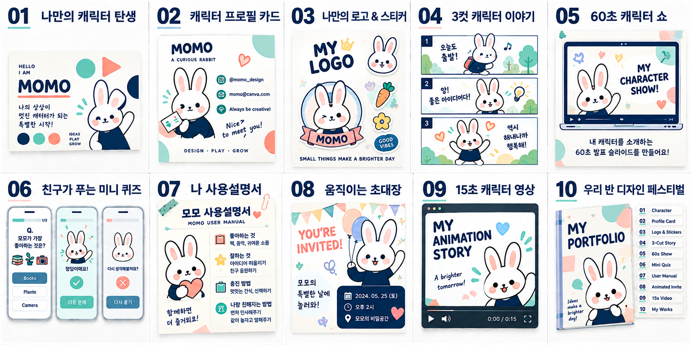
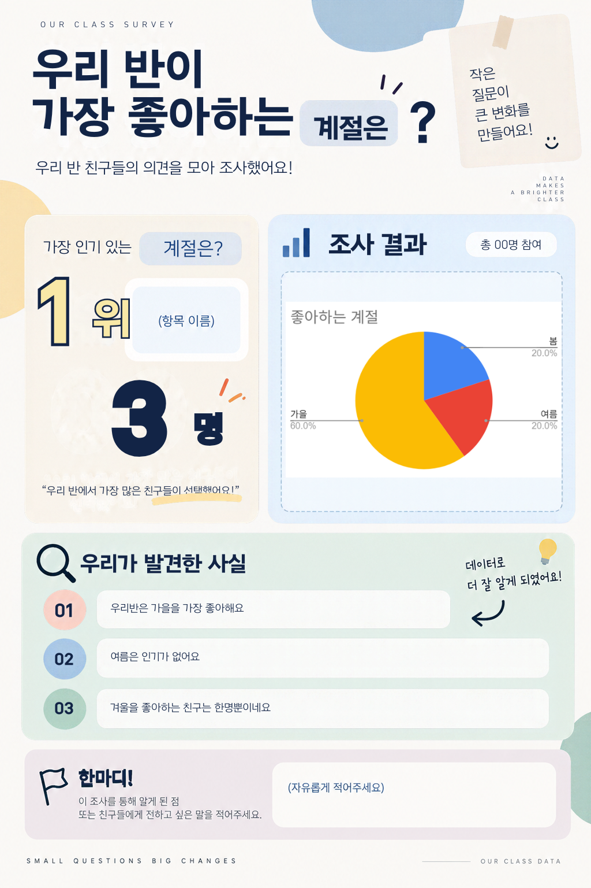
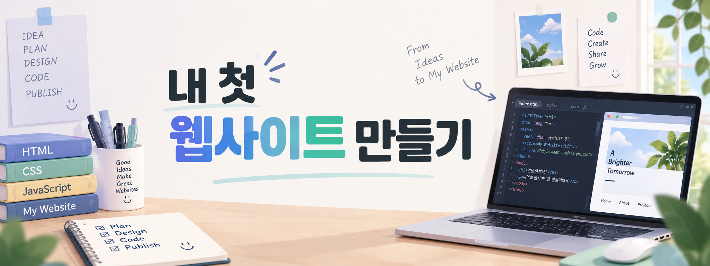

01 · ELEMENTARY DESIGN
Canva 디자인 랩
캐릭터 카드, 퀴즈, 3컷 이야기, 움직이는 소개와 작품집까지 매 차시 하나의 작품을 완성합니다.
아이디어 선택 → 기능 실습 → 작품 완성·공유
수업 웹페이지 ↗초등학생의 아이디어를 디지털 작품으로, 시니어의 배움을 생활 속 자신감으로 연결합니다. 개발자의 구조화 경험과 교육 현장의 감각을 바탕으로 이해하고, 직접 만들고, 서로 나누는 수업을 설계합니다.
초등 코딩 · 디지털 리터러시 · 시니어 스마트폰 / AI 창작
무엇을 배우고, 어떤 과정을 거쳐, 무엇을 완성하는지 한눈에 확인할 수 있도록 구성했습니다.

캐릭터 카드, 퀴즈, 3컷 이야기, 움직이는 소개와 작품집까지 매 차시 하나의 작품을 완성합니다.

직접 만든 설문을 Google Sheets로 분석하고 Canva 포스터로 표현한 뒤 결과를 공유합니다.

HTML 구조를 이해하고 제공된 JavaScript 템플릿을 수정한 뒤 웹에 배포해 공유 가능한 주소를 만듭니다.
스마트폰 기초와 생활 앱을 반복 실습하고, AI 이미지 도구로 나만의 이야기를 디지털 콘텐츠로 완성합니다.
직접 제작한 프로젝트를 바탕으로 순차·조건·반복·변수와 좌표·충돌 판정을 익힙니다. 게임뿐 아니라 퀴즈, 애니메이션, 선택형 이야기로 확장합니다.
수업 방향과 결과물은 공개하되 세부 지도안과 원본 템플릿은 일부만 소개합니다.
캐릭터 카드부터 이야기, 움직이는 소개, 작품집까지.
설문 → Sheets 분석 → Canva 포스터 → 결과 공유.
HTML·JavaScript 템플릿 수정과 웹 배포.
미로, 점수·충돌 게임 등 조작하고 도전하는 프로젝트.
퀴즈, 애니메이션, 선택형 이야기로 표현과 상호작용 확장.
생활 속 스마트폰 활용부터 AI 이미지 그림동화까지.
차시 안내와 학습 자료를 한곳에서 확인합니다.
설문 데이터를 표와 차트로 읽고 분석합니다.
아이디어를 시각적인 결과물로 완성합니다.
작품을 제출하고 서로 감상하며 나눕니다.
박은현 · 디지털교육 강사
초등 코딩 · 디지털 리터러시 · 시니어 스마트폰
Java, JSP, Spring, Oracle, JavaScript 기반 개발 경험
정보처리기사 · AI 디지털튜터 양성과정 수료
디지털배움터와 경로당 수업 보조·출강 경험
Notion, Google Sheets, Canva, Padlet과 웹 기술 활용